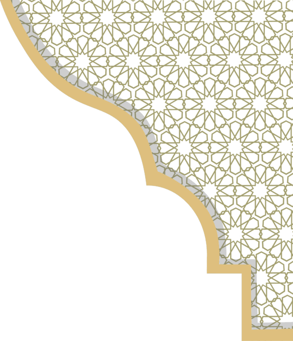

RAMADHAN DUA COLLECTION



DUA FOR SUHOOR
1. The Intention to Fast
Every act of worship in Islam is founded upon intention. The Prophet ﷺ said, “Actions are only by intentions.” The Niyyah is fundamentally an action of the heart, a conscious resolve made for the sake of Allah alone. While verbal articulation is not obligatory, many scholars permitted expressing it verbally as a means of strengthening focus and mindfulness before the arrival of Fajr. At the time of Suhoor, one renews this covenant of servitude and obedience.
نَوَيْتُ صِيَامَ
هَذَا الْيَوْمِ لِلّٰهِ
تَعَالَى إِيمَانًا
وَاحْتِسَابًا، يَا رَبِّ تَقَبَّلْهُ
مِنِّي وَأَعِنِّي عَلَيْهِ
Nawaytu siyāma hādhā al-yawm lillāhi ta‘ālā īmānan waḥtisāban, Yā Rabbi
taqabbalhu minnī wa a‘innī
‘alayh.
“I intend to fast today for the sake of Allah, with faith and sincere hope for His reward. O Allah,
accept it from me and help me to complete it.”
2. Expressing Gratitude for Divine Provision
To awaken before dawn and find sustenance prepared is itself a manifestation of divine generosity. The believer recognizes that provision is not merely the result of personal effort but a gift from Ar-Razzaq, the Ultimate Provider. Gratitude at the time of Suhoor invites increase, protects from heedlessness, and instills humility in the heart.
الْحَمْدُ لِلَّهِ
الَّذِي أَطْعَمَنِي هَذَا وَرَزَقَنِيهِ مِنْ غَيْرِ حَوْلٍ مِنِّي وَلَا قُوَّةٍ
Alhamdulillahil-ladhi at‘amani hadha, wa razaqanihi min ghayri hawlin minni wa
la quwwah.
“All praise is due to Allah who has fed me this and provided it for me without any power or strength
from myself.”
Jami‘ at-Tirmidhi 3458 ↗
3. Seeking Forgiveness in the Last Third of the Night
Suhoor coincides with the most spiritually potent segment of the night, the final third, known in the tradition as the time of Tahajjud. In rigorously authentic narrations, the Prophet ﷺ informed us that during this time Allah calls out in a manner befitting His Majesty: “Who is calling upon Me so that I may answer him? Who is asking Me so that I may give him? Who is seeking My forgiveness so that I may forgive him?”This is a sacred invitation. Before the Fajr adhan, let the tongue be moistened with Istighfar and the heart humbled in repentance. Seek forgiveness for yourself, your family, and the Ummah at large. Ramadan is a month of liberation from sin and renewal of spiritual life.
رَبَّنَا إِنَّنَا
آمَنَّا فَاغْفِرْ لَنَا ذُنُوبَنَا وَقِنَا عَذَابَ النَّارِ
Rabbana innana amanna faghfir lana dhunubana waqina ‘adhaban-nar.
“Our Lord, indeed we have believed, so forgive us our sins and protect us from the punishment of the
Fire.”
Surah Aal ‘Imran 3:16 ↗
DUA FOR IFTAR
1. The Primary Dua for Breaking the Fast (Iftar)
The most well-known and authentically narrated dua for breaking the fast comes from the hadith of Abdullah ibn Umar (may Allah be pleased with him). He reported that the Messenger of Allah (ﷺ) used to say the following words when he broke his fast:
ذَهَبَ الظَّمَأُ
وَابْتَلَّتِ الْعُرُوقُ وَثَبَتَ الْأَجْرُ إِنْ شَاءَ اللَّهُ
Dhahaba aẓ-ẓama'u wabtallatil-'urūqu wa thabata al-ajru in shā'a Allāh.
"Thirst is gone, the veins are moistened, and the reward is certain, if Allah wills."
Sunan Abu Dawud 2357 ↗
2. Dua Narrated by Abdullah ibn Amr at Iftar
Another beautiful supplication for iftar comes from the great companion Abdullah ibn Amr ibn al-As (may Allah be pleased with him). Ibn Abi Mulaikah reported that when Abdullah ibn Amr broke his fast, he would make this heartfelt dua:
اللَّهُمَّ إِنِّي
أَسْأَلُكَ بِرَحْمَتِكَ الَّتِي وَسِعَتْ كُلَّ شَيْءٍ أَنْ تَغْفِرَ لِي
Allāhumma innī as'aluka bi-raḥmatikal-latī wasi'at kulla shay'in an taghfira
lī.
“All praise is due to Allah who has fed me this and provided it for me without any power or strength
from myself.”
Sunan Ibn Majah 1753 ↗
3. Saying Bismillah Before Eating at Iftar
Beyond the specific iftar duas, it is a confirmed Sunnah to say "Bismillah" (In the Name of Allah) before beginning to eat. This applies to every meal, but it carries special significance at iftar when breaking the sacred fast.The Prophet (ﷺ) instructed Umar ibn Abi Salamah (may Allah be pleased with him): "Mention the Name of Allah (say Bismillah), eat with your right hand, and eat from what is near you." This hadith, agreed upon by both Bukhari and Muslim, establishes saying Bismillah before eating as one of the essential etiquettes of dining in Islam.
5. Dua After Finishing the Meal
After completing your iftar meal, it is also Sunnah to express gratitude to Allah for the provision. The Prophet (ﷺ) taught us this beautiful dua to say after eating:
الْحَمْدُ لِلَّهِ
الَّذِي أَطْعَمَنِي هَذَا وَرَزَقَنِيهِ مِنْ غَيْرِ حَوْلٍ مِنِّي وَلَا قُوَّةٍ
Al-ḥamdu lillāhil-ladhī aṭ'amanī hādhā wa razaqanīhi min ghayri ḥawlin minnī wa
lā quwwah.
"Praise be to Allah who fed me this and provided it for me without any might or power on my part."
Sunan Abu Dawud 4023 ↗